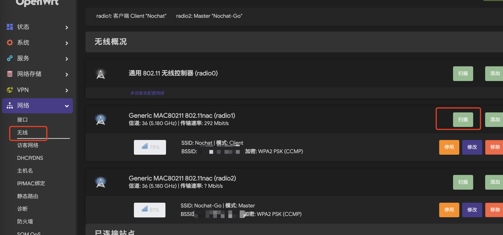
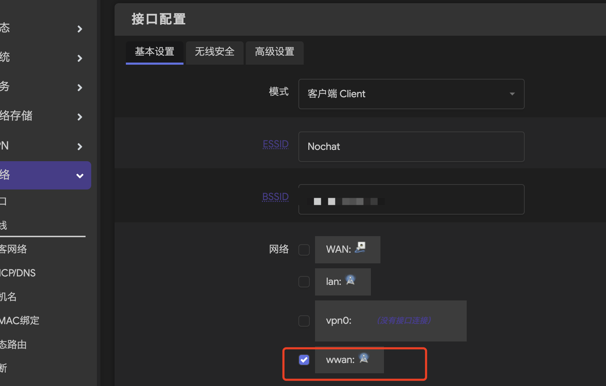

这一篇文章是关于树莓派 4B 搭建 OpenWrt 热点的设置，主要是为了在树莓派上搭建一个热点，方便在没有网线的情况下连接到互联网。
也是为了自己后面再来看的时候，可以设置点，如何设置。
准备工作
- 硬件准备 首先是买一个免驱动的wifi网卡，拼多多不到20块钱一个。 树莓派4B，内存卡-8G
- 刷机 开始下载固件，这里由于树莓派的网卡是BCM的，就下载这个对应的版本就可以 下载suningGG的固件，我第一次没有解压刷机成功，第二次解压了刷机也是ok的 下载树莓派的刷包软件
- 刷完之后，启动 连接wifi Openwrt 登录192.168.1.1 不用输入密码
- 配置作为一个客户端，类似ap接入点 LAN口是转发出来的，最后的成品 WWAN口是扫描添加一个网口的
主要教程 step by step
主要参考的教程是这个：
https://v2fy.com/p/2021-02-06-pi3-1612603909000/
不知道后面还可以访问？ 下面是这个教程的关键步骤。
找刷机镜像 找到一个仓库 https://github.com/SuLingGG/OpenWrt-Rpi ，里面有树莓派全系设备的OpenWrt刷机镜像
将镜像刷入SD卡 刷镜像软件下载地址: https://frp.v2fy.com/balenaEtcher/
将SD卡插入树莓派，给树莓派通电开机 树莓派开机后20秒左右，使用电脑查看周围的Wifi，将会看到一个名为OpenWrt的Wifi网络，电脑可以直接加入OpenWrt网络（无需密码）
登录树莓派路由器后台 打开浏览器，输入 http://192.168.1.1 进入路由器后台
输入默认用户名，root 和 password
配置Wan口 路由器也分入口和出口， 入口为Wan 口， 出口为Lan口， 上一步我们已经通过Wifi接入后台，说明Lank口已经没问题了， 而Wan口需要我们自己配置。
如果我们将网线插入树莓派，则是和传统路由类似， 使用有线式Wan口。
而我这次来个不一样的，将闲置的USB免驱无线网卡插入树莓派，做一个无线式Wan口。
下次修改接入点 wifi 热点
刷机好了 ，设置好自己的 先扫描 wifi，添加到这个口 
然后关联起来即可 
read more
- 额外外接的网卡作为wan口，驱动成功后，在后台WAN口外接网卡可以直接扫描周围wifi，输入密码，接入互联网 https://v2fy.com/p/2021-07-04-openwrt-4b-1625383754000/comment-page-1/#comment-80842
这个教程全面： 把树莓派作为主路由、旁路由、AP热点-客户端 https://blog.csdn.net/qq_42523645/article/details/133755333
可以借鉴下面这个教程里面的配图， 接入点ap的设置 https://zhuanlan.zhihu.com/p/451788328
树莓派3b搭建openwrt科学上网， 用的sulingGG固件 https://tanweime.com/2023/05/03/%E6%A0%91%E8%8E%93%E6%B4%BE3b%E6%90%AD%E5%BB%BAopenwrt%E7%A7%91%E5%AD%A6%E4%B8%8A%E7%BD%91/